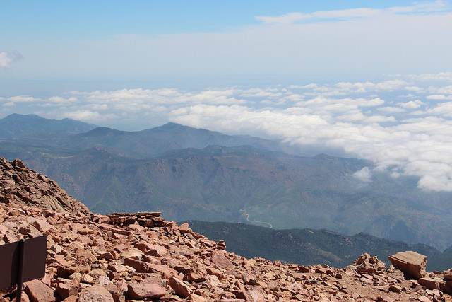
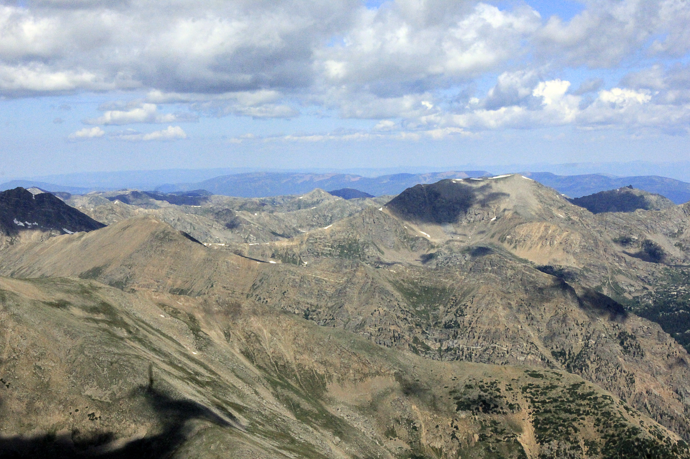
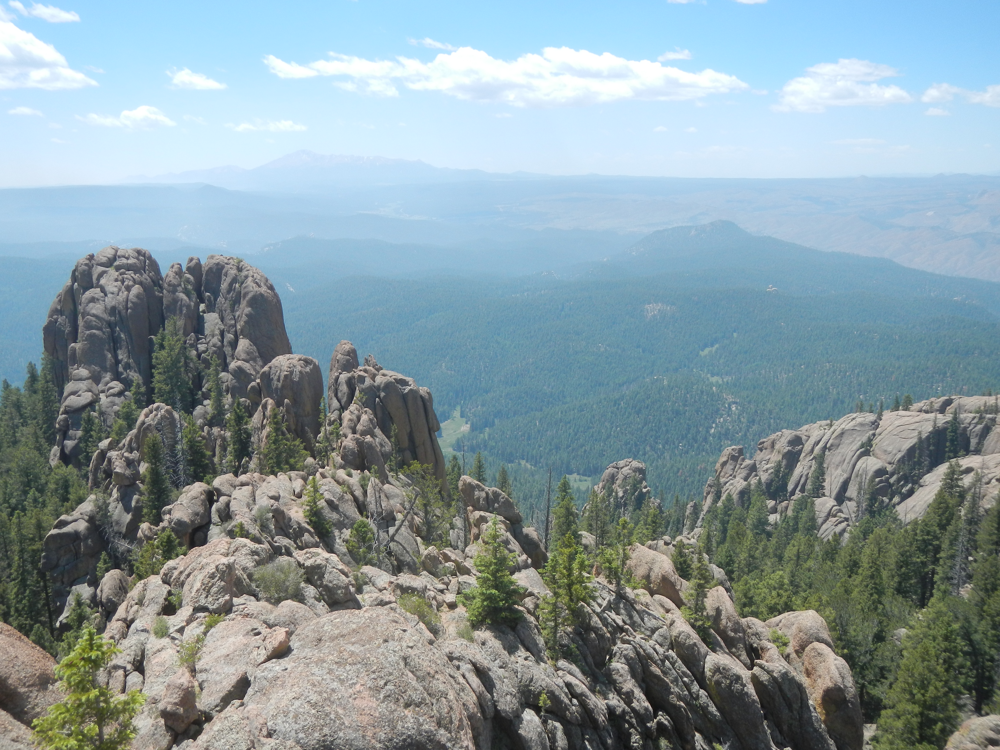

If possible, try any of these hikes while in the area. They could be hard with the altitude, but they're well worth it!
Pikes Peak
One of the most famous mountains in Colorado, Pikes Peak offers multiple ways to ascend. Some routes offer shorter paths up the mountain, but the most famous Barr Trail is an impresive 13 miles one way! If 13 miles sounds way too extreme, driving all the way up the summit is also an option.
Mount Elbert
The tallest mountain in Colorado, Mount Elbert stands at a whopping 14,440 feet tall. Despite its massive size, Mount Elbert offers one of the easiest ascents of all the Colorado "14ers". Nicknamed the Gentle Giant, the easiest and most common path is a 4.6 mile hike up the Colorado Trail near Twin Lakes. You will gain approximately 4,100 feet in the process. Dress warm!
Devil's Head
If scaling a massive mountain isn't your thing, maybe try Devil's Head. Well known amongst locals, Devil's head is a nice and easy day hike about an hour from Denver. At only 2.8 miles round trip and a 940 foot elevation gain, this hike can easily be done in one day with little preparation. Make no mistake, Devil's Head offers an impressive view off the top of a fire watch tower. Devil's head offers a great day trip for amateur and experienced hikers alike.
